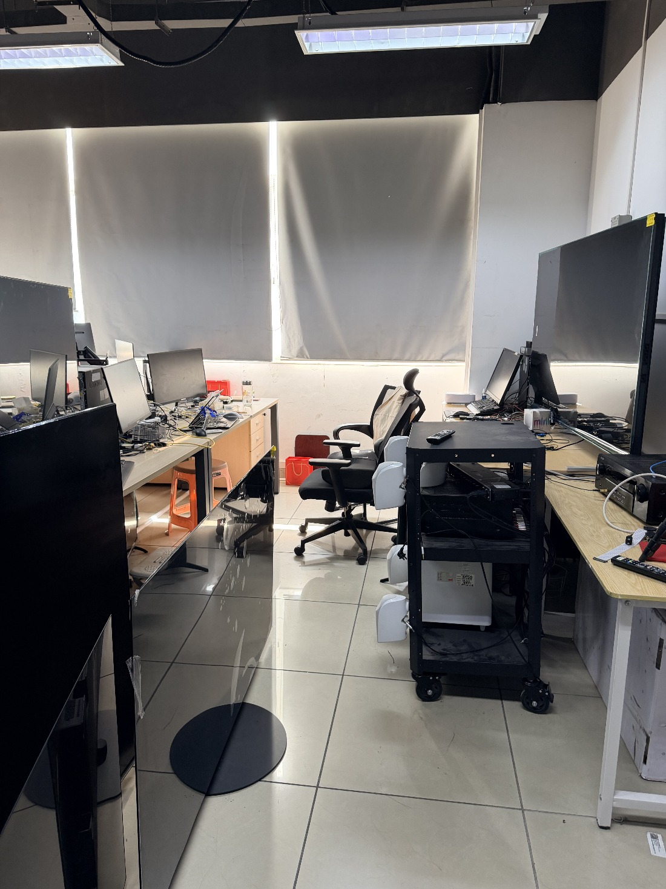
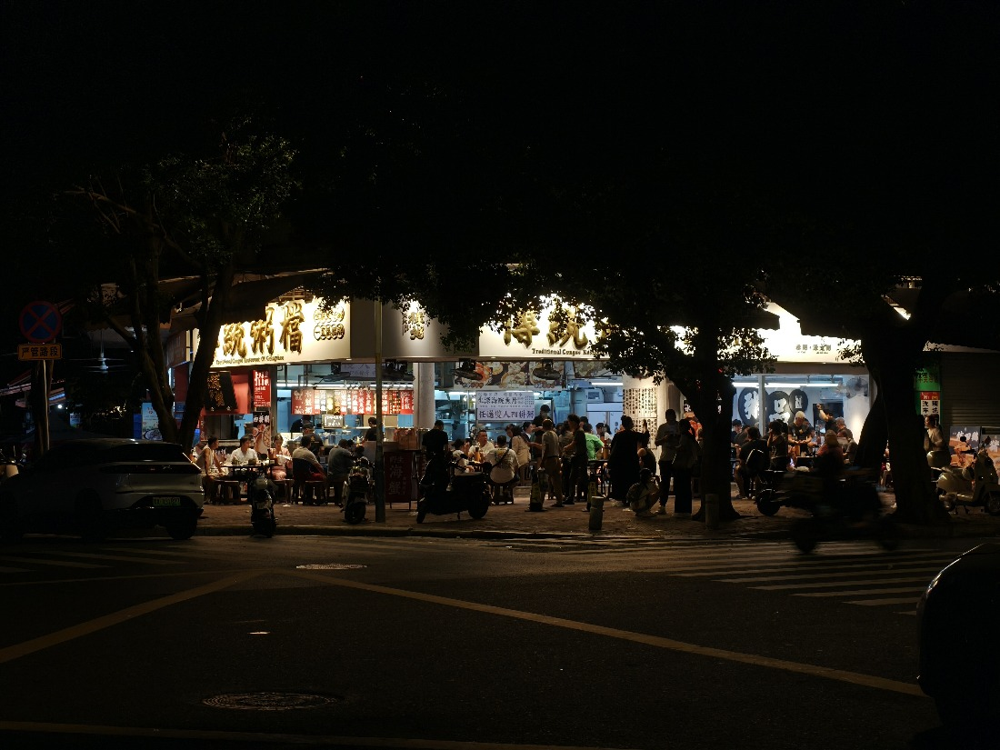
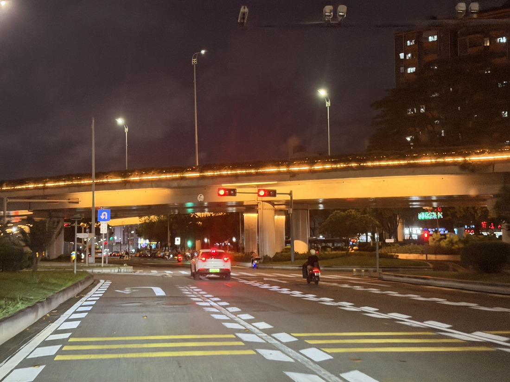
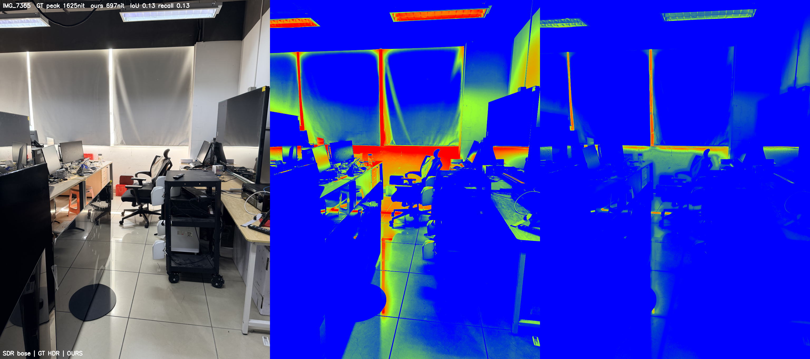
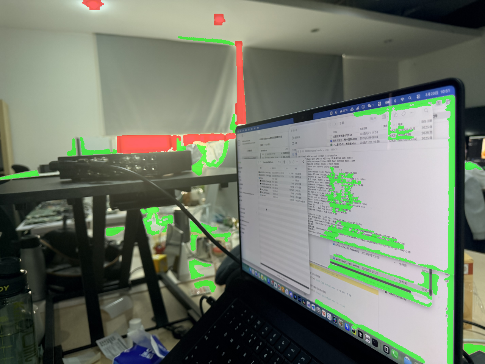
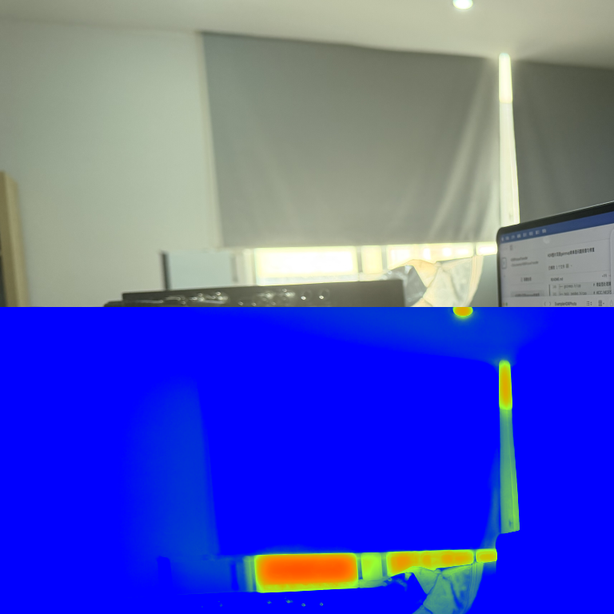

把普通画面还原成 HDR
——一套逆色调映射系统的思路与打磨Rebuilding Ordinary Images as HDR
— Designing and Refining an Inverse Tone-Mapping System
从一张 SDR 图片或一段 SDR 视频出发，自动判断"哪里该亮、该多亮"， 在物理正确的色彩空间里重建高动态范围画面，输出符合行业标准的 HDR 文件。 本页记录系统的核心思路，以及一路上踩过的坑与评测驱动的优化全过程。Starting with an SDR image or video, the system automatically decides what should be bright and how bright it should be. It reconstructs a high-dynamic-range image in a physically meaningful color space and outputs an industry-compliant HDR file. This page documents the core design, the pitfalls we hit, and the full process of evaluation-driven refinement.
我们到底在解决什么What are we actually solving?
绝大多数现存影像都是 SDR（标准动态范围）：白墙、台灯、天空在 SDR 里被压到同一个"白"——亮度信息在编码时就丢了，而 HDR 显示器能呈现的亮度是它的几十倍。Most existing imagery is SDR (standard dynamic range): a white wall, a desk lamp, and the sky may all be compressed to the same "white." Their luminance differences were lost during encoding, while an HDR display can reproduce tens of times more luminance.
逆色调映射（ITM）的任务，是从被压扁的 SDR 反推回合理的高动态范围：让光源真正发光、高光刺眼、暗部留层次，而不是把整张图无脑调亮。Inverse tone mapping (ITM) attempts to infer a plausible high-dynamic-range image from that compressed SDR signal: light sources should glow, highlights should feel brilliant, and shadows should retain depth, without simply brightening the entire frame.
难点一 · 哪里该亮Challenge 1 · What should be bright?
SDR 里一盏 1000nit 的灯和一面 200nit 的白墙像素值可能完全一样（都削顶到 255）。光靠亮度无法区分，必须理解画面内容。In SDR, a 1,000-nit lamp and a 200-nit white wall can have exactly the same pixel value, both clipped at 255. Luminance alone cannot distinguish them; the system must understand image content.
难点二 · 该多亮Challenge 2 · How bright?
提多了肤色/白墙过曝刺眼，提少了又没有 HDR 该有的通透。需要在物理正确的亮度刻度上精确标定。Push too far and skin or white walls become painfully overexposed; push too little and the image lacks HDR clarity. The result must be calibrated on a physically meaningful luminance scale.
难点三 · 别露馅Challenge 3 · Hide the seams
提亮区与未提亮区之间若有硬边界、色彩断层、块状伪影，观感比 SDR 还差。平滑过渡是底线。Hard boundaries, color banding, or block artifacts between enhanced and untouched regions can look worse than SDR. Smooth transitions are non-negotiable.
一帧画面要经过的处理管线The processing pipeline for a single frame
核心原则：所有增强都在"线性光"域完成。SDR 是 gamma 编码的，直接在编码值上运算会污染颜色——必须先解码到线性光，处理完再编码回 HDR 的 PQ 曲线。The central rule: all enhancement happens in linear light. SDR is gamma-encoded, so operating directly on encoded values distorts color. It must first be decoded to linear light, processed, then encoded with the HDR PQ curve.
三类区域，三种策略Three region types, three strategies
把每个像素分成三类，因为它们需要完全不同的处理——这是"哪里该亮"的核心答案。Every pixel is assigned to one of three classes because each requires a fundamentally different treatment. This is the core answer to "what should be bright?"
Type I · 自发光Type I · Emissive
灯、火焰、屏幕、太阳。该最亮，凸性曲线把削顶白扩展到接近显示峰值（~800nit）。靠 YOLOE 检测 + 近削顶白核兜底。Lamps, flames, screens, and the sun. These should be brightest: a convex curve expands clipped white toward the display peak (~800 nits), using YOLOE detection with a near-clipped white core as fallback.
Type II · 材质反射Type II · Specular reflections
玻璃、金属、水面的镜面高光。中等亮（~500nit），保留材质感与色彩体积，边缘需平滑防硬块。Specular highlights on glass, metal, and water. These receive a moderate lift (~500 nits) to preserve material appearance and color volume, with edge smoothing to prevent hard blocks.
Type III · 普通区域Type III · Ordinary regions
占画面 90%+。温和：漫反射白轻抬到 ~250nit，近削顶高光给"肩部"抬到 ~450nit，其余基本保持原片。More than 90% of the frame. Treatment is gentle: diffuse white rises slightly to ~250 nits, near-clipped highlights get a shoulder up to ~450 nits, and everything else remains close to the source.
同一张图，处理前 → 处理后The same image, before → after
左为输入的 SDR 原图，右为系统重建的 真 HDR 输出（Rec.2020 PQ 的 HDR AVIF）。 在支持 HDR 的浏览器 + HDR 屏幕（如 macOS 上的 Safari / Chrome，配 XDR / HDR 显示器）上， 右图的窗户、灯、高光会真正刺眼地亮起来，超出左图 SDR 的白。The left side is the original SDR input; the right is the system's true HDR reconstruction, an HDR AVIF in Rec.2020 PQ. In an HDR-capable browser on an HDR display—such as Safari or Chrome on macOS with an XDR/HDR display—the windows, lamps, and highlights on the right become physically brighter than SDR white.

处理前 · SDRBefore · SDR 处理后 · HDR ✨After · HDR ✨
处理后 · HDR ✨After · HDR ✨
处理前 · SDRBefore · SDR 处理后 · HDR ✨After · HDR ✨
处理后 · HDR ✨After · HDR ✨
处理前 · SDRBefore · SDR 处理后 · HDR ✨After · HDR ✨
处理后 · HDR ✨After · HDR ✨几个绕不开的色彩科学概念Essential color-science concepts
BT.2408 参考白 = 203nitBT.2408 reference white = 203 nits
整套系统的"亮度锚点"。行业标准规定：SDR 的漫反射白（纸张、白衬衫）在 HDR 里应对应 203 nit，而非显示器峰值。高光（光源、镜面）才向上延伸到 1000nit。This is the system's luminance anchor. Industry guidance maps SDR diffuse white—paper or a white shirt—to 203 nits in HDR, not to the display peak. Highlights such as emitters and specular reflections extend upward toward 1,000 nits.
PQ 曲线 + Rec.2020PQ curve + Rec.2020
PQ（SMPTE ST 2084）是 HDR 传输函数，把 0–10,000 nit 绝对亮度编码进有限码值，暗部分配更多精度（符合人眼）。Rec.2020提供更宽的色域容器。两者构成 HDR10 的色彩与亮度基础；完整的 HDR10 交付还涉及 10-bit 位深、信号配置及静态元数据，HDR 静图也需遵循各自的格式配置。PQ (SMPTE ST 2084) is an HDR transfer function that encodes absolute luminance from 0 to 10,000 nits into finite code values, allocating more precision to dark tones in line with human vision. Rec.2020 provides a wider-gamut container. Together they form the color and luminance foundation of HDR10; a complete HDR10 delivery also requires 10-bit depth, the appropriate signal configuration, and static metadata, while HDR still images follow their own format profiles.
线性光 1.0（=203nit）→ ×(203/10000) 进入 PQ 绝对亮度域 → 编码。Linear-light 1.0 (= 203 nits) → × (203 / 10,000) into PQ's absolute-luminance domain → encode.
Gainmap：手机 HDR 的秘密，也是我们的"真值"Gain maps: the secret of phone HDR, and our ground truth
iPhone / Android 的 HDR 照片其实是 SDR 基础层 + 增益图（gainmap）：增益图是逐像素的"该亮多少"灰度图。这给了一个绝佳评测思路——把手机 HDR 拆成 SDR，用我们的系统重建，再和手机原生 HDR 对比看差距。详见评测章节 ↓HDR photos from iPhone and Android are effectively an SDR base image plus a gain map: a per-pixel grayscale map describing how much brighter each area should become. That creates an ideal evaluation method—extract the SDR base from a phone HDR image, rebuild it with our system, and compare it against the phone's native HDR result. See the evaluation section ↓
优化历程：每一步都是一个踩坑The optimization journey: every step began with a pitfall
按主题串起系统的演进。● 画质/算法 ● 性能 ● 评测驱动The system's evolution, organized by theme. ● Image quality / algorithms ● Performance ● Evaluation-driven
色彩断层与参考白
问题：HDR 输出大片色彩断层（posterization）；整体过曝。
修复：把全管线 LAB/HSV/双边/CLAHE 从 uint8（256 级）升级到 float32 / uint16，消除量化断层；引入 BT.2408 参考白，SDR 白从错误的 1000nit 锚回 203nit。
从 COCO 封闭集到 YOLOE 开放词汇
问题：原模型（YOLOv8n / COCO-80）根本没有"台灯/吊灯/烛火/霓虹/荧光灯"这些类别——核心自发光物体永远检不出。
修复：换成 YOLOE 开放词汇 + 分割模型，用文本提示（58 条，8 大类）直接描述光源，还输出像素级掩码替代矩形框。
"手电筒/条形灯不亮"——五层故障叠加
两个真实片源里光源死活提不亮，逐层排查发现 五个独立问题叠在一起：
| 层 | 故障 | 修复 |
|---|---|---|
| 提示词 | 没有 flashlight / fluorescent tube | 补齐提示词 |
| 置信度 | 暗场景光源置信度仅 0.05–0.23 被滤掉 | 三层证据融合：弱语义 × 框内光度确认 |
| 白核兜底 | 强光白衣物被误判成光源 | 收紧到硬削顶 V≥0.99 & S≤0.15 |
| 亮度门控 | 调色"平"的暖灯差一线被拒 | 门控按场景白相对化 |
| 高光曲线 | 渐近 Reinhard 永远到不了设定峰值 | 凸性曲线 + 场景自适应白锚点(EMA) |
scipy 众数滤波：一帧 20 秒
问题：视频渲染奇慢（6.5 小时）。逐阶段 profile 发现真凶是时序平滑里的 scipy.stats.mode，在 5×1080p 上单次 19.87 秒，占每帧 95%+。
修复：区域图只有 3 个标签值，改用 numpy 按标签计数取 argmax——516× 提速，与 scipy 输出 100% 一致。
把 ITM 整条搬到 MPS GPU
问题：profile 显示逆色调映射占每帧 82% 耗时（1080p ~700ms），且全跑在 CPU 上。
修复：用 torch 在 Apple Silicon 的 MPS 上重写整条 ITM，逐点数学数值精确复刻；唯一难点是双边滤波在 GPU 上仍要 140ms——换成引导滤波（纯 box-filter，O(1)，~2ms）后整体 10.7× 提速，峰值亮度与 CPU 版逐 nit 一致。
硬件编码 + 可选分辨率
用 Apple VideoToolbox 硬件 HEVC 替代 libx265 软编（快一个量级），并用 hevc_metadata 比特流过滤器强制写入正确的 HDR10 标签；新增处理分辨率选项（4K→1080p 约快 4 倍）。
视频不能逐帧抖：检测记忆 · 光流 · 镜头切换
检测记忆
开放词汇模型对弱光源逐帧抖动，用衰减记忆桥接间歇漏检，避免光源逐帧断闪。
光流跟踪 mask
开"检测间隔"时用 DIS 光流把上一帧区域图跟踪到当前帧，mask 不滞后于运动；ITM 仍逐帧跑，画面不冻结。
镜头切换检测
HSV 直方图相关性突变即判定硬切，清空所有时序状态——否则上一镜头的 mask/曝光锚点会残留到下一镜头。
正确的 HDR 文件格式
图像输出对齐工业实现：JPEG XL，Rec.2020 + D65 + PQ + 绝对渲染意图 + intensity_target。实测硬件编码器会丢 VUI 色彩信息，必须显式注入，否则播放器不切 HDR 模式。可在 macOS 预览 / Safari 直接以正确亮度查看。
Color banding and reference white
Problem: large areas of posterization in the HDR output and global overexposure.
Fix: upgrade the entire LAB/HSV/bilateral/CLAHE pipeline from uint8 (256 levels) to float32/uint16 to remove quantization banding; introduce BT.2408 reference white and move SDR white from the incorrect 1,000-nit anchor back to 203 nits.
From a closed COCO set to YOLOE open vocabulary
Problem: the original model (YOLOv8n / COCO-80) had no classes for desk lamps, pendant lights, candles, neon, or fluorescent tubes, so the most important emissive objects could never be detected.
Fix: switch to YOLOE open-vocabulary detection with segmentation. Text prompts—58 prompts in eight groups—describe light sources directly, while pixel-level masks replace rectangular boxes.
"The flashlight and tube light stay dark"—five stacked failures
Two real clips contained light sources that refused to brighten. Layer-by-layer diagnosis revealed five independent problems stacked together:
| Layer | Failure | Fix |
|---|---|---|
| Prompts | No flashlight / fluorescent tube | Add the missing prompts |
| Confidence | Dark-scene sources scored only 0.05–0.23 and were filtered out | Three-layer evidence fusion: weak semantics × photometric confirmation inside the box |
| White-core fallback | Bright white clothing was mistaken for a light source | Tighten to hard clipping: V≥0.99 & S≤0.15 |
| Luminance gate | Flat-graded warm lamps narrowly failed the test | Make the gate relative to scene white |
| Highlight curve | Asymptotic Reinhard could never reach the target peak | Convex curve + scene-adaptive white anchor (EMA) |
scipy mode filtering: 20 seconds per frame
Problem: video rendering took 6.5 hours. Stage-level profiling identified scipy.stats.mode in temporal smoothing as the real culprit: 19.87 seconds per call across five 1080p maps, more than 95% of each frame.
Fix: the region map has only three labels, so count each label with NumPy and take argmax. The result is 516× faster and exactly matches SciPy's output.
Move the entire ITM pipeline to the MPS GPU
Problem: profiling showed inverse tone mapping consumed 82% of each frame (~700 ms at 1080p), entirely on the CPU.
Fix: rewrite the whole ITM path in Torch on Apple Silicon's MPS, reproducing the pointwise math numerically. The one remaining problem was a 140 ms bilateral filter on the GPU; replacing it with a guided filter—pure box filtering, O(1), ~2 ms—produced an overall 10.7× speedup, with peak luminance matching the CPU version to the nit.
Hardware encoding + selectable resolution
Replace libx265 software encoding with Apple's VideoToolbox hardware HEVC, roughly an order of magnitude faster, and force correct HDR10 tags into the bitstream with the hevc_metadata filter. A selectable processing resolution was also added; 4K→1080p is about four times faster.
Video cannot flicker frame by frame: detection memory · optical flow · shot changes
Detection memory
The open-vocabulary model flickers on weak light sources. Decaying memory bridges intermittent misses and prevents sources from flashing on and off.
Optical-flow mask tracking
When detection runs at intervals, DIS optical flow warps the previous region map into the current frame so masks follow motion. ITM still runs every frame, so the image never freezes.
Shot-change detection
A sudden change in HSV-histogram correlation marks a hard cut and clears all temporal state. Otherwise masks and exposure anchors from the previous shot leak into the next.
Correct HDR file formats
Image output follows an industry implementation: JPEG XL with Rec.2020 + D65 + PQ + absolute rendering intent + intensity_target. Testing showed that the hardware encoder can drop VUI color information, which must be injected explicitly or the player will not enter HDR mode. The files display at the correct luminance in macOS Preview and Safari.
用手机原生 HDR 当"标准答案"Using native phone HDR as the answer key
调参数最怕"自我感觉良好"。于是搭了一套有真值的评测闭环：手机 gainmap 照片本身同时含 SDR 和 HDR，正好当 ground truth。The greatest danger in tuning is trusting your own impression. We therefore built a closed evaluation loop with ground truth: a phone gain-map photo contains both SDR and HDR representations, making it an ideal reference.

诊断 → 标定 → 复测
问题不在"亮度幅度"而在"覆盖"和"封顶"。确认走折中路线（漫反射白 ~250nit、高光 ~800nit、峰值维持 1000nit）后，三处联动调整：
- Type III 给近削顶高光加"肩部"——没被检测为光源的亮天空/窗户也抬到 HDR 高光；
- Type I/II 提高扩展幅度，让真光源够到 700–800nit；
- 放开融合护栏（2.2→4.2×），不再把扩展截断。
| 指标 | 优化前 | 折中标定后 |
|---|---|---|
| 高光 recall（命中手机高光比例） | 0.05 | 0.15 (3×) |
| 重建峰值 | ~350 nit | 700+ nit (2×) |
| 白天场景高光 IoU | 0.01 | 0.36–0.39 |
| precision（不误增高光） | 1.00 | 1.00 |
注：夜景下手机会把整片夜空/路面都激进提亮，我们按折中只提真光源——recall 仍偏低，但这是主动选择的理念，不是缺陷。
Diagnose → calibrate → retest
The problem was not the lift itself, but coverage and clipping. After choosing a balanced target—diffuse white ~250 nits, highlights ~800 nits, 1,000-nit peak—we adjusted three linked controls:
- Add a shoulder to near-clipped Type III highlights, lifting bright skies and windows even when they are not detected as emitters.
- Increase Type I/II expansion so real light sources reach 700–800 nits.
- Relax the blending guardrail from 2.2× to 4.2× so it no longer truncates the expansion.
| Metric | Before | After balanced calibration |
|---|---|---|
| Highlight recall (share of phone highlights found) | 0.05 | 0.15 (3×) |
| Reconstructed peak | ~350 nits | 700+ nits (2×) |
| Daytime-scene highlight IoU | 0.01 | 0.36–0.39 |
| Precision (no false highlight expansion) | 1.00 | 1.00 |
Note: phones may aggressively lift the entire sky and road in night scenes. Our balanced approach lifts only genuine light sources, so recall remains lower by deliberate design, not as a defect.
越激进，越要防"露馅"The harder the push, the more carefully seams must be hidden
把高光提得更猛后，新问题浮现：提亮区与未提亮区之间出现硬边界 / 块状伪影。根因有二——反射检测在亮纹理区碎成椒盐麻点（每块都被提亮，边界全是硬边）；陡峭的高光曲线还放大了 SDR 里的 JPEG 块伪影。Once highlights were pushed harder, a new problem appeared: hard boundaries and block artifacts between enhanced and untouched regions. There were two causes: reflection detection fragmented into salt-and-pepper specks across bright texture, creating a hard edge around every lifted patch; and the steep highlight curve amplified existing JPEG blocks in the SDR source.

两道修复
① 区域去碎块
分类后做"开运算去碎点 → 闭运算合并 → 剔除小连通域"，让 Type I/II 成为连贯的块而非麻点。
② 增益场边缘感知平滑
借鉴 gainmap 思想：在 ITM 最后把"提亮倍率场"用引导滤波平滑，以 SDR 感知亮度为导向——真实边缘（窗框、灯沿）处倍率保持锐利，平坦区内的碎块/JPEG 块倍率被抹平，从源头消除提亮硬边界。

Two fixes
① Remove fragmented regions
After classification, apply opening to remove specks, closing to merge regions, then discard small connected components. Type I/II regions become coherent shapes instead of noise.
② Edge-aware smoothing of the gain field
Borrowing from gain maps, smooth the final ITM multiplier field with a guided filter, using SDR perceptual luminance as the guide. Multipliers remain sharp at real edges such as window frames and lamp outlines, while fragments and JPEG-block multipliers are flattened inside uniform areas, removing enhancement seams at the source.